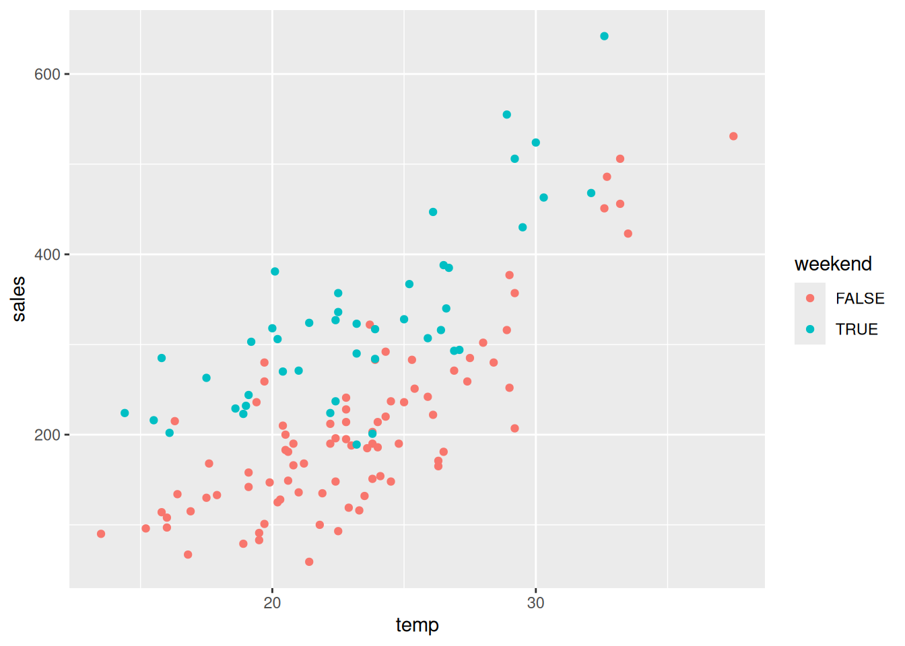
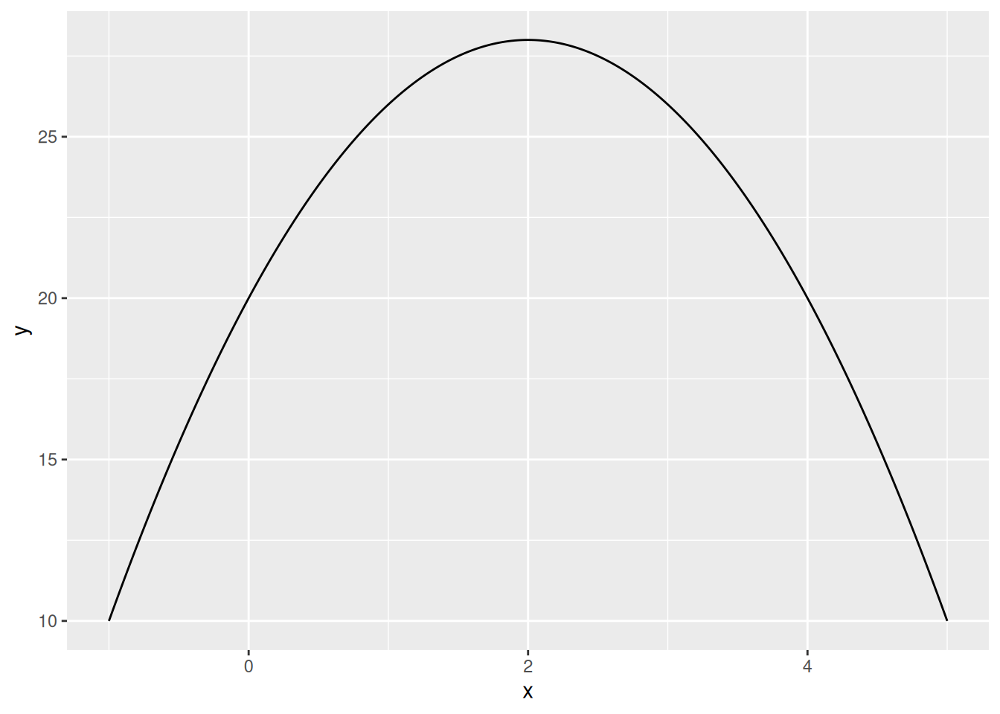

((3/4) + log(12, base = 2))/sqrt(10)[1] 1.370836
Write an R command that calculates the following:
\frac{\frac{3}{4} + \log_2\left(12\right)}{\sqrt{10}}
Provide both the numerical answer and the R command.
Answer:
((3/4) + log(12, base = 2))/sqrt(10)[1] 1.370836Write an R command in the box below that generates a sequence of 20 evenly-spaced values starting from 0 and ending in 1.
The first two elements of your sequence should be 0.00000000 and 0.05263158.
Your answer must use a sequence-generating function. It is not permitted to write out the full vector manually.
Answer:
seq(from = 0, to = 1, length.out = 20) [1] 0.00000000 0.05263158 0.10526316 0.15789474 0.21052632 0.26315789
[7] 0.31578947 0.36842105 0.42105263 0.47368421 0.52631579 0.57894737
[13] 0.63157895 0.68421053 0.73684211 0.78947368 0.84210526 0.89473684
[19] 0.94736842 1.00000000Consider the following 2 vectors:
cities <- c("Amsterdam", "Brussels", "Paris", "Rotterdam")
dutch_cities <- c("Amsterdam", "Den Haag", "Rotterdam", "Utrecht")Write an R command using the %in% operator that returns the elements of cities that are contained in the vector dutch_cities. The code you provide in your answer does not need to include these above 2 lines .
The output of your command should be [1] "Amsterdam" "Rotterdam"
Answer:
cities[cities %in% dutch_cities][1] "Amsterdam" "Rotterdam"Define x as follows:
x <- c(1, -7, 3, -4)Writing an R command in the box below using the ifelse() function that takes x as input and returns a character vector with "positive" whenever x is positive and "not positive" whenever x is not positive.
The output of your command should be [1] "positive" "not positive" "positive" "not positive".
ifelse(x > 0, "positive", "not positive")[1] "positive" "not positive" "positive" "not positive"Download the dataset sales-data-dec-2025.csv. The dataset contains information on the total sales of a firm for different furniture products in different cities where it has stores in December 2025. The variable descriptions are:
product: The product (Sofa, Chair or Table).city: The city where the store is (Tilburg, Breda, Eindhoven or 's-Hertogenbosch).price: The selling price of the product.sales: The total number of units sold of that product in that city in December 2025.When reading the dataset into R, assign it to df.
What is the mean of the variable sales?
Provide both the numerical answer and the R command required to obtain the answer (if the dataframe is assigned to df).
Answer:
df <- read.csv("sales-data-dec-2025.csv")
mean(df$sales)[1] 140.5Part (a): Write an R command in the box below that creates a new variable in df called revenue, which is price multiplied by sales.
Answer:
df$revenue <- df$price * df$salesPart (b): Write an R command in the box below that returns the total revenue from chair sales across the 4 cities.
Answer:
sum(df$revenue[df$product == "Chair"])[1] 485749Write an R command in the box below using the aggregate() function that returns the total number of units sold for each product.
Answer:
aggregate(sales ~ product, data = df, FUN = sum) product sales
1 Chair 1104
2 Sofa 292
3 Table 290Using an appropriate function from the reshape2 package, write an R command in the box below to reshape the data such that there are 4 rows, one for each city, and the columns are:
The output should be the following:
city Chair Sofa Table
1 's-Hertogenbosch 286 147 113
2 Breda 240 41 72
3 Eindhoven 285 63 45
4 Tilburg 293 41 60Hint: Load the reshape2 package using the command library(reshape2). You do not need to include loading this package in your answer.
Answer:
library(reshape2)
dcast(df, city ~ product, value.var = "sales") city Chair Sofa Table
1 's-Hertogenbosch 286 147 113
2 Breda 240 41 72
3 Eindhoven 285 63 45
4 Tilburg 293 41 60Download the following two datasets:
The first dataset contains the total number of ice cream scoops sold by an ice cream salesman in Tilburg in the summer of 2025 (May 1 to September 30). This salesman takes Mondays off every week, so it says "Day off" for the sales variable on Mondays.
The second dataset contains the daily high temperature in Tilburg on each date from May-September 2025.
When reading the datasets into R, assign ice-cream-sales-2025.csv to df1 and temperature-2025.csv to df2.
The next question will involve some data cleaning steps. If you perform these steps correctly, your final dataset should match the following file: temperature-sales-2025.csv If it does not, you can use this file to answer the analysis questions that follow.
Perform the following cleaning steps:
Part (a): Write an R command in the box below using the as.Date() function that will correctly format the date variable in df1 to an R date.
Answer:
df1 <- read.csv("ice-cream-sales-2025.csv")
df1$date <- as.Date(df1$date, format = "%d/%m/%y")Part (b): Write an R command in the box below that will drop all Mondays from df1. After this command df1 should have 131 rows.
Answer:
df1 <- df1[df1$day_of_week != "Mon", ]Part (c): Write an R command in the box below that will convert the sales variable in df1 to numeric.
Answer:
df1$sales <- as.numeric(df1$sales)Part (d): Write an R command in the box below that will create a variable called weekend that is TRUE if the day of the week is Saturday or Sunday and FALSE otherwise.
Answer:
df1$weekend <- df1$day_of_week %in% c("Sat", "Sun")Part (e): Write an R command in the box below that will convert the date variable in df2 to an R date.
Answer:
df2 <- read.csv("temperature-2025.csv")
df2$date <- as.Date(df2$date, format = "%Y-%m-%d")Part (f): Write an R command in the box below that will merge df1 and df2 by the date variable. Assign the output of this command to df.
Answer:
df <- merge(df1, df2, by = "date")Using your cleaned dataset (or the cleaned version of the data provided in the block introduction), calculate the average sales on days that were both on the weekend and had a temperature of at least 30 degrees.
Answer:
mean(df$sales[df$weekend & df$temp >= 30])[1] 524.25Using your cleaned dataset (or the cleaned version of the data provided in the block introduction), plot temperature on the horizontal axis and sales on the vertical axis. Make the color of the points represent the value of the weekend variable.
Use this plot to answer the following two questions.
Part (a): Choose the correct option from the following.
Part (b): Choose the correct option from the following.
Based on the colors of the points:
Answer:
library(ggplot2)
ggplot(df, aes(temp, sales, color = weekend)) + geom_point()
# (a) Warmer days on average have higher sales compared to cooler days.
# (b) Given the temperature, there are more sales on the weekend compared to
# during the week.The following 3 questions will involve working with the following mathematical function defined over all real numbers x:
f(x) = 20 + 8x - 2x^2
Plot the function between the x values -1 and +5. Add the correct options in the boxes below that best describe the plot.
Part (a): The shape of the function is a straight line / flat / U-shaped / inverse U-shaped.
Part (b): When f(x) = 20, the corresponding values of x are \_\_\_ and \_\_\_.
Part (c): At x=3, the function is downward-sloping / flat / upward-sloping / vertical.
Answer:
f <- function(x) {
y <- 20 + 8*x - 2 * x^2
return(y)
}
library(ggplot2)
x <- seq(-1, 5, length.out = 2000)
y <- f(x)
df <- data.frame(x, y)
ggplot(df, aes(x, y)) + geom_line()
# Part (a) The shape of the function is inverse U-shaped.
# Part (b) The values of x when f(x)=20 are 0 and 4.
# Part (c) At x=3, the function is downward-sloping.Use R to find the value of x at an extreme point of this function.
Part (a): Type this value of x in the box below.
Answer:
f_max <- optimize(f, c(-100, 100), maximum = TRUE)
f_max$maximum[1] 2Part (b) What value does the function take at the extreme point?
Answer:
f_max$objective[1] 28# or alternatively:
f(f_max$maximum)[1] 28